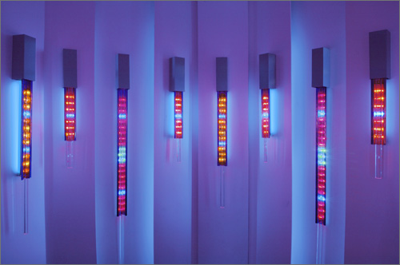

people doing strange things with electricity
The nine million and second dorkbot-nyc meeting took place on Wednesday, November 2nd at 7pm at Location One in SoHo.
It featured the lovely and talented:
Jonah Brucker-Cohen: Deconstructing Networks
Jonah will discuss his work in the theme of "Deconstructing Networks" in both physical and online instantiations. He will discuss his projects that attempt to challenge and subvert accepted notions of network interaction from software manipulation and rule-based systems to translating virtual processes and conventions into the physical world. Some projects he will discuss include BumpList, an email community for the determined, Alerting Infrastructure!, a website hit counter that destroys a building, PoliceState a fleet of radio controlled policecars who's movements are dictated by keywords sniffed on a local network, and SimpleTEXT a performance that is controlled by participants through texting messages from their mobile phones.
http://www.coin-operated.com Carol Salmanson: Environments of pulsating color
Carol Salmanson builds installations that combine optics with light to create environments of pulsating color. Two years ago she started working with light, taking the spatial and color concerns that had long dominated her paintings into a whole different realm. Her work has both an architectural and a theatrical component, a fascination with how to transform ones perception of space. Instead of being about energy and motion, her installations seek to expand stillness.
http://www.carolsalmanson.comChris Vecchio: Cube
Chris Vecchio is an electrical engineer who began creating electronic devices to help him better understand the relationship between man and technology. Chris will present an overview of his work over the past few years including the Meterbox series - an investigation into the narrative potential of electronic circuitry, Evidence of Toolmaking - a series of handheld sculptures integrating electronics and bone, and concluding with a demonstration of Cube - an interactive sound installation and study in the design of ambiguous but suggestive user interfaces.
http://www.chrisvecchio.com
Image gallery from the meeting